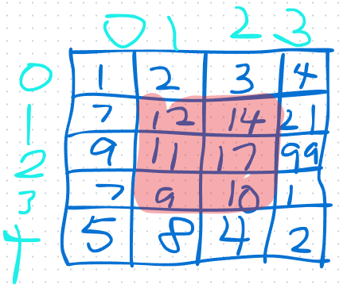
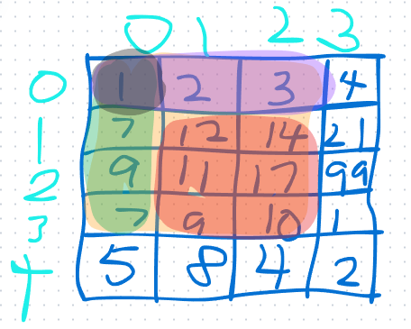
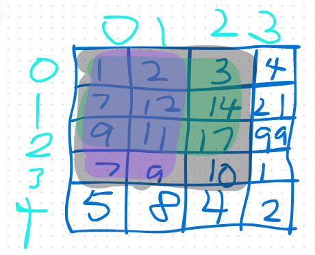

前缀和算法是一种用于解决数组中子数组和问题的算法。它通过预先计算数组的前缀和，然后利用这些前缀和来快速求解子数组和。
比较常用的就是一维前缀和，二维前缀和。
这里先来讲解如何求得前缀和，再来说如何灵活应用前缀和以及何时应该使用前缀和。
前缀和
我们将从一维前缀和开始，拓展到二维，来解决数组中子数组和的问题。
一维前缀和
前缀和的定义就是一个存储数组前n项和的数组。
但是其中有一些细节需要明确，为了处理边界问题，我们通常会定义一个长度为n+1的数组，其中第0项为0，第n+1项为数组末尾的和。preSum[i]表示nums[0]+...+nums[i-1]。
此时，如果要计算nums[i]+...+nums[j]的和，只需要计算preSum[j+1]-preSum[i]即可。
无需考虑边界情况。
例题
题目要求我们计算数组中任意区间的和。其实就是求出一个前缀和数组，然后计算任意区间的和。
这里给出Go代码：
type NumArray struct {
preSum []int
nums []int
}
func Constructor(nums []int) NumArray {
preSum := make([]int, len(nums)+1)
for i := 1; i <= len(nums); i++ {
preSum[i] = preSum[i-1] + nums[i-1]
}
return NumArray{preSum: preSum, nums: nums}
}
func (this *NumArray) SumRange(left int, right int) int {
return this.preSum[right+1] - this.preSum[left]
}
可变数组的前缀和（对前缀和数组进行维护）
这道题其实就是需要维护前缀和数组,当数组中一个元素被修改的时候,其实影响到的是preSum[i+1]到preSum[n]的值,所以需要对preSum[i+1]到preSum[n]进行修改。
这里给出Go代码：
type NumArray struct {
nums []int
preSum []int
}
func Constructor(nums []int) NumArray {
preSum := make([]int, len(nums)+1)
for i := 0; i < len(nums); i++ {
preSum[i+1] = preSum[i] + nums[i]
}
return NumArray{nums: nums, preSum: preSum}
}
func (this *NumArray) Update(index int, val int) {
old := this.nums[index]
change := val - old
for i := index + 1; i < len(this.preSum); i++ {
this.preSum[i] += change
}
this.nums[index] = val
}
func (this *NumArray) SumRange(left int, right int) int {
return this.preSum[right+1] - this.preSum[left]
}
二维前缀和
考虑一个二维数组，你如何能快速计算出其中一片区域的和？
举个例子：
我们如何计算出红色区域的和？
其实就是计算出一个二维前缀和数组，这个数组每一个元素对应着原数组中以该元素为右下角，以原点为左上角的矩形的和。
为了处理边界情况，这里也是同样，定义一个长度为m+1，宽度为n+1的二维数组，其中第0行和第0列都为0。
而其元素preSum[i][j]表示原数组中以(i-1,j-1)为右下角，以(0,0)为左上角的矩形的和。
你可能要问了，定义了这个数组又能怎么解决这个问题呢？
请看下图：
我们要求的是红色区域的和，其实就是黄色区域-绿色区域-紫色区域+黑色区域。之所以要加黑色区域，是因为黑色区域在减紫色区域和绿色区域的时候被减去了两次。
很好，我们得到了这样一个公式：设ans为左上角为(i,j)，右下角为(x,y)的矩形的和，那么ans=preSum[x+1][y+1]-preSum[i][y+1]-preSum[x+1][j]+preSum[i][j]。
现在剩下的问题就是如何求得二维前缀和数组了。
请看下图：
要求黑色区域的和，也就是preSum[4][3]，其实就是nums[3][2]+紫色区域(preSum[4][2])+绿色区域(preSum[3][3])-绿色和紫色的重叠区域(preSum[3][2])。
于是我们得到了这样一个公式：preSum[i][j]=preSum[i-1][j]+preSum[i][j-1]-preSum[i-1][j-1]+nums[i-1][j-1]。
而我们是从1到n遍历i和j，所以preSum[i-1][j]和preSum[i][j-1]和preSum[i-1][j-1]都是有效的。
并且由于我们定义的preSum数组长度为m+1，宽度为n+1，preSum[i][j]对应的是从(0,0)到(i-1,j-1)的矩形的和，于是这个地方我们无需考虑边界情况。
例题
题目要求我们计算数组中任意区间的和。其实就是求出一个二维前缀和数组，然后计算任意区间的和。
这里给出Go代码：
type NumMatrix struct {
preSum [][]int
}
func Constructor(matrix [][]int) NumMatrix {
if len(matrix) == 0 {
return NumMatrix{}
}
if len(matrix[0]) == 0 {
return NumMatrix{}
}
row := len(matrix) + 1
col := len(matrix[0]) + 1
preSumTmp := make([][]int, row)
for i := 0; i < len(preSumTmp); i++ {
preSumTmp[i] = make([]int, col)
}
for i := 1; i < row; i++ {
for j := 1; j < col; j++ {
preSumTmp[i][j] = preSumTmp[i-1][j] + preSumTmp[i][j-1] - preSumTmp[i-1][j-1] + matrix[i-1][j-1]
}
}
return NumMatrix{
preSum: preSumTmp,
}
}
func (this *NumMatrix) SumRegion(row1 int, col1 int, row2 int, col2 int) int {
return this.preSum[row2+1][col2+1] - this.preSum[row1][col2+1] - this.preSum[row2+1][col1] + this.preSum[row1][col1]
}
可变二维前缀和（对前缀和数组进行维护）
这道题其实就是需要维护二维前缀和数组,当数组中一个元素被修改的时候,其实影响到的是preSum[i+1][j+1]到preSum[m][n]的值,所以需要对preSum[i+1][j+1]到preSum[m][n]进行修改。
这里给出Go代码：
type NumMatrix struct {
nums [][]int
preSum [][]int
}
func Constructor(matrix [][]int) NumMatrix {
row := len(matrix)
if row == 0 {
return NumMatrix{}
}
col := len(matrix[0])
if col == 0 {
return NumMatrix{}
}
preSum := make([][]int, row+1)
for i := 0; i < len(preSum); i++ {
preSum[i] = make([]int, col+1)
}
for i := 1; i < row+1; i++ {
for j := 1; j < col+1; j++ {
preSum[i][j] = preSum[i-1][j] + preSum[i][j-1] - preSum[i-1][j-1] + matrix[i-1][j-1]
}
}
return NumMatrix{
nums: matrix,
preSum: preSum,
}
}
func (this *NumMatrix) Update(row int, col int, val int) {
old := this.nums[row][col]
change := val - old
this.nums[row][col] = val
for i := row + 1; i < len(this.preSum); i++ {
for j := col + 1; j < len(this.preSum[0]); j++ {
this.preSum[i][j] += change
}
}
}
func (this *NumMatrix) SumRegion(row1 int, col1 int, row2 int, col2 int) int {
return this.preSum[row2+1][col2+1] - this.preSum[row2+1][col1] - this.preSum[row1][col2+1] + this.preSum[row1][col1]
}
前缀和的应用
实际上前缀和的最大作用就是来在O(1)的时间复杂度内求解数组中任意区间的和。
但是前缀和的局限性在于，它只能求解数组中任意区间的和，而不能求解数组中任意区间的乘积、最大值、最小值等。
所以，如果题目要求我们求解数组中任意区间的乘积、最大值、最小值等，那么我们就需要使用其他算法了。
值得一提的是前缀和往往和哈希表一起使用，来解决数组中子数组和满足某个特点的条件的问题。
下面我用三个题目来展示前缀和和哈希表的结合使用。
例题1
题目要求找到含有相同数量的 0 和 1 的最长连续子数组。为了将其和前缀和结合，我们可以将0看作-1，1看作1，那么问题就变成了找到和为0的最长连续子数组。
然后我们就可以使用前缀和来解决这个问题了。
计算出前缀和，然后遍历前缀和集合，每次都在哈希表中查找-preSum[i]，如果存在，那么就说明从preSum[i]到preSum[j]的和为0，那么就找到了一个满足条件的子数组。
同时如果preSum[i]不存在，那么就将其加入哈希表中。值得注意的是，如果哈希表中有当前值，那么不能更新其索引，因为我们需要的是最长的子数组。
这里给出Go代码：
func findMaxLength(nums []int) int {
preSum := make([]int, len(nums)+1)
for i := 1; i < len(preSum); i++ {
if nums[i-1] == 0 {
preSum[i] = preSum[i-1] - 1
} else {
preSum[i] = preSum[i-1] + 1
}
}
ans := 0
mapSumIndex := make(map[int]int)
for i := 0; i < len(preSum); i++ {
if x, ok := mapSumIndex[preSum[i]]; ok {
tmp := i - x
if tmp > ans {
ans = tmp
}
} else {
mapSumIndex[preSum[i]] = i
}
}
return ans
}
例题2
题目要求我们判断数组中是否存在一个长度为k的子数组，其和为k的倍数。
我们来变通一下，我们知道一个子数组的长度可以用preSum[j+1]-preSum[i]来表示，那么如果(preSum[j+1]-preSum[i])%k==0，那么就说明这个子数组是满足条件的。同时说明preSum[j+1]%k==preSum[i]%k。
那么我们就可以使用哈希表来解决这个问题了。
遍历数组，每次都在哈希表中查找preSum[i]%k，如果存在，那么就说明从preSum[i]到preSum[j]的和为k的倍数，那么就找到了一个满足条件的子数组。
同时如果preSum[i]%k不存在，那么就将其加入哈希表中。值得注意的是，需要判断索引的差是否大于等于2，因为题目要求子数组的长度至少为2。
这里给出Go代码：
func checkSubarraySum(nums []int, k int) bool {
preSum := make([]int, len(nums)+1)
for i := 1; i < len(preSum); i++ {
preSum[i] = preSum[i-1] + nums[i-1]
}
mapModIndex := make(map[int]int)
for i := 0; i < len(preSum); i++ {
if x, ok := mapModIndex[preSum[i]%k]; ok {
if (i-x) >= 2 {
return true
}
} else {
mapModIndex[preSum[i]%k] = i
}
}
return false
}
例题3
题目要求我们找到和为k的子数组。
我们来变通一下，和为k，即preSum[j+1]-preSum[i]==k，那么preSum[j+1]==preSum[i]+k。注意此时的j>=i，所以preSum[i]其实比preSum[j+1]更早遍历到。那么我们就需要根据当前遍历到的值，来从哈希表中查找是否有值=preSum[j+1]-k。如果有，那么在ans中加上这个值的个数（因为可能有多个前缀和等于这个值）。
也正是因为前缀和数组中可能存在重复的值，并且题目让我们返回满足条件的子数组的个数，所以哈希表表示的是在preSum中存在value个值为key的值。
这里给出Go代码：
func subarraySum(nums []int, k int) int {
preSum := make([]int, len(nums)+1)
for i := 1; i < len(preSum); i++ {
preSum[i] = preSum[i-1] + nums[i-1]
}
mapPresumIndex := make(map[int]int)
ans := 0
for i := 0; i < len(preSum); i++ {
if x, ok := mapPresumIndex[preSum[i]-k]; ok {
ans += x
}
mapPresumIndex[preSum[i]]++
}
return ans
}
何时使用前缀和
实际上前缀和解决的是子数组问题中的一个子类。
如果题目是让我们求一个数组中满足某个条件的子数组，那么我们就可以考虑使用前缀和。
而实际上满足某个条件的子数组还经常用滑动窗口来做。
还有一类题目是求子数组的最值，如果用前缀和来做时间复杂度很高，就得考虑动态规划。
总之子数组问题逃不脱这几种做法，可以在遇到的时候多多思考和尝试。